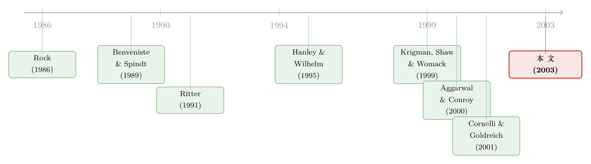

新股开盘那天的「滔天」成交，到底是谁在卖？
本文读的是 Aggarwal (2003, Journal of Financial Economics)：一只新股上市头两天，成交量平均高达发行股数的 81.97%，人人都觉得这是「打新者抛货」。但作者用一份独一无二的「配售＋抛售」数据证明，真正属于抛售 (flipping) 的只占成交量的 18.95%、占发行量的 15%——而且，被供奉为「长线之手」的机构，恰恰比散户抛得更狠，越热的新股抛得越凶。
1 一个所有人都「知道」、却没人量过的事实
先讲一个场面。
2000 年 4 月 27 日，AT&T Wireless 上市。当天纽交所有 1.374 亿股易手，是全场最活跃的股票。第二天《华尔街日报》给出了一句几乎是条件反射式的判断：成交这么大，「说明很多拿到配售的机构投资者立刻把股票『抛』掉套现了」。
这句话你我都不会觉得有问题。新股第一天往往大涨，拿到发行价的人转手卖到二级市场，就能赚一笔无风险的差价；既然差价唾手可得，那滔天的成交量，不就是这群「打新者」在集体落袋吗？这套逻辑顺得让人懒得追问。
但这里有一个谁都没真正回答过的问题：那一天的巨量成交，到底有多少股，是真正「拿了配售又卖掉」的抛售？
注意，这个问题听上去简单，实际上几乎无解。因为承销商从不公开机构与个人各拿了多少配售，公众更不知道谁抛了货。你能看到的只有一个总成交量——它把原始打新者的抛售、二级市场上后来者的买进卖出、做市商之间的来回倒手，全部搅在了一起，从外面根本拆不开。于是「成交量大＝抛售多」这个等式，几十年来被默认成立，却从来没人能把等号右边那一项单独称出来。
Aggarwal 这篇论文的全部价值，就在于她真的把这一项称了出来——并且称完之后，发现等式根本不成立。
2 一份「能看见每个人手牌」的数据
要拆开那团乱麻，你需要的不是更聪明的算法，而是更好的数据。
在此之前，学界最有名的尝试是 Krigman、Shaw 和 Womack (1999)。他们没有真实的抛售记录，只能用一个代理变量 (proxy)：把成交记录里「卖方发起的大宗交易」（一万股或五千股以上）当作机构抛售。这是聪明的退而求其次，但它有两个致命假设——所有大单卖出都是抛售、所有抛售都是大单。后面我们会看到，这两个假设都站不住。
Aggarwal 走了另一条路。她拿到的是一份真正的「内部账本」：1996 年 5 月美国证券存管公司 (Depository Trust Company, DTC) 上线、并于 1997 年 6 月 2 日 全面实施的「首次公开发行追踪系统」(Initial Public Tracking System)。这套系统的本意是帮承销商抓抛售者——主承销商每天能收到一份报告，逐笔列出哪个辛迪加成员的配售客户卖了股票，含成交价、成交日、股数。更关键的是，对主承销商自己分销的那部分股票，它还能区分机构客户 vs. 散户客户各自的抛售明细。
换句话说，这份数据第一次让研究者同时看见了两件事：每个客户被配了多少股，以及他在头 30 天里卖掉了多少股。抛售这个概念，终于有了它该有的分母。
「抛售」(flipping) 在本文里有严格定义：拿到发行价配售的投资者，在上市后立刻把这批股票卖回二级市场。它不包括在二级市场上买入后再卖出。一个客户若在 IPO 和二级市场都买了同一只股，交割时先用二级市场那批冲抵，因此不算抛售。这个口径，正是代理变量做不到的精度。
数据细节：作者用 Securities Data Company (SDC) 新发行库锁定 1997 年 5 月至 1998 年 6 月间的全部 617 只美国 IPO，再向九家大小投行索取它们作为主承销商的全部交易记录，最终样本为 193 只 IPO。样本里的 IPO 个头偏大——发行价中位数 $15、发行规模中位数 $64.40 百万，都高于全市场（$12 与 $36 百万）。
3 反转：抛售只是「沧海一粟」
现在把称出来的数字摆上桌。
头两天的成交量，平均是发行股数的 81.97%（中位数 74.10%）——这印证了「成交量大」的直觉。但属于真正抛售的呢？
- 抛售占成交量：平均
18.95%，中位数16.67%； - 抛售占发行量：平均
15.00%，中位数仅7.34%。
读一遍第二个数字：发行出去的股票，头两天里有约 85% 压根没被立刻抛掉。原始投资者绝大多数把股票攥在手里。所谓「打新者集体出逃造就天量成交」，从根上就是个错觉。
那成交量是从哪儿来的？这里是全文最漂亮的一处洞察：少量被抛出的股票，可以被反复倒手，产生巨大的乘数效应。 高成交不是因为大批原始持有人在卖，而是因为同一批股票被一遍又一遍地买进卖出。谁在倒？一是后来进场、本就不是原始打新者的二级市场买卖双方；二是做市商——尤其是 Aggarwal 与 Conroy (2000)、Ellis、Michaely 和 O'Hara (2000) 记录过的那些为纳斯达克 IPO 做市、靠订单流付费的「批发商」(wholesalers)，他们为完成一个客户订单可能要做好几笔交易，还会盘中做空。再加上 Geczy、Musto 和 Reed (2002) 发现的、上市头几天极度活跃的证券借贷与卖空——所有这些都在给成交量「灌水」，却都和「打新者抛货」无关。
于是悬念被掀翻了第一层：成交量是真大，抛售是真小，两者之间隔着一个乘数。 Krigman 等人代理变量为什么会高估？现在答案清楚了：他们把大量「卖方发起的大单」都记成了抛售，可那里面混着做市商的倒手和二级市场卖盘；而真正的机构抛售，单笔规模其实小于他们一万/五千股的门槛——尤其在热门股里，每家机构只分到一点点配售，还会主动把订单拆小以降低价格冲击。一高一低，误差就这么来的。
4 真正关键的一步：把抛售除以「配售」
讲到这里，故事其实可以再深一层。
只盯着「抛售占成交量」会骗人，因为分母（成交量）本身在不同冷热的新股里天差地别。要衡量一个投资者有多想跑，正确的分母不是成交量，而是他被配了多少。这正是这份数据相对所有前人研究的根本优势——它能算「抛售 ÷ 配售」。
换上这把尺子，两个被广泛相信的「常识」当场翻车。
常识一：机构是「长线之手」(strong hands)。 人们一直说，投行偏爱把大头配给机构，因为它们是长期投资者、不会在二级市场抛货。可数据显示，机构始终比散户抛得更狠——把抛售放回各自的配售去比，机构抛掉的比例一致地高于散户。
常识二：抛售在冷门股里更多。 因为有人猜，机构很精明，会趁投行还在给冷门股托价时赶紧把冷门股抛给它接盘。但按「抛售 ÷ 配售」算出来的结论恰恰相反：
- 在初始回报最高的那组 IPO 里，机构抛掉所配股份的
46.74%，散户抛27.86%； - 在初始回报最低的那组里，机构只抛
19.90%，散户只抛11.53%。
也就是说，越热的新股，机构和散户都抛得越凶。Krigman 等人之所以得出「弱市新股抛售占比更大」，纯粹是因为弱市新股成交量太低（分母小），而非真有更多人在抛。一旦把抛售关联到初始配售，方向就反了过来。
这条反转直接回应了 Fishe (2001) 与 Boehmer 和 Fishe (2000) 的一个模型预言：抑价 (underpricing) 是为了诱导抛售、从而制造二级市场流动性。Aggarwal 的证据部分支持这套逻辑——确实是越抑价（越热）的股票被抛得越多；但她同时强调，二级市场的流动性远不止来自抛售，做市商的倒手才是大头。
顺带，这也化解了文献里一桩看似的矛盾。Field (1995)、Hanley 和 Wilhelm (1995) 发现机构在强弱发行中拿到的配售比例差不多；可六个月后机构持仓又出现巨大差异。两者怎么共存？Aggarwal 给出了缺失的中间环节：初始配售比例相近，但热门股被抛掉得多，半年后持仓自然就拉开了。配售是起点，抛售是过程，持仓是终点——这条链终于接上了。
5 那「惩罚」呢？被高估的威慑
故事还剩一个尾巴。
既然投行那么怕弱市新股被抛（抛盘会把价格砸到发行价以下，逼得承销商自己下场托价、买回抛出来的货），它们理应频繁动用「惩罚性买单」(penalty bid)——主承销商把客户抛了货的那个辛迪加成员的销售佣金 (selling concession) 没收，再由该成员去扣经纪人的钱。这是教科书里抑制抛售的标准武器。
可数据说，惩罚性买单极少被真正执行。追踪系统虽可持续到 120 天，但主承销商随时能喊停，且通常很早就停了——即便是大涨的 IPO，惯例也只追踪 30 天。很多时候投行只是把信息收着「以备将来之用」，并不当场罚人。这意味着，所谓对抛售者的威慑，更多停留在「不带你玩下一单」的隐性威胁上，而非账面上的真金白银处罚。
把三层反转连起来看，本文的核心贡献其实就一句话：当你第一次能把「配售」和「抛售」放在一起看，关于 IPO 二级市场的几乎每一个流行直觉——成交大是因为抛售、机构是长线之手、冷门股抛得多、惩罚很常见——都被数据逐一证伪了。
6 文献脉络
把这篇论文放回它生长的那条线上，会看得更清楚。
最上游是 IPO 抑价之谜本身：Rock (1986) 的「赢家诅咒」模型预言知情投资者会拿到更多被抑价股票的配售；Aggarwal 和 Rivoli (1990)、Ritter (1991) 记录了短期跳涨与长期跑输。这条线解释了「为什么打新有利可图」——也就解释了抛售的动机从何而来。（关于抑价本身到底是不是真的，可参见《新股到底是「打折」卖，还是「溢价」卖？》。）
接着，配售机制成了焦点。Benveniste 和 Spindt (1989) 提出投行用配售去「贿赂」知情投资者吐露真实需求；Cornelli 和 Goldreich (2001) 用真实账本证实常来捧场、肯给限价的机构能拿到更多配售；Hanley 和 Wilhelm (1995)、Ljungqvist 和 Wilhelm (2002) 量出机构拿走了约三分之二的发行量。这条线告诉我们「股票配给了谁」。

然后是二级市场托价这条线：Aggarwal (2000) 记录承销商的稳定化操作，Aggarwal 和 Conroy (2000)、Ellis 等 (2000) 揭示做市商（尤其批发商）在 IPO 后市的核心角色。这条线告诉我们「上市后市场是怎么运转的」。
而真正离本文最近的对手，是 Krigman、Shaw 和 Womack (1999)——第一个试图实证测量抛售、却受限于代理变量的研究。Aggarwal 这篇论文的位置由此而明：她站在「配售文献」和「后市文献」的交汇点上，用一份能同时看见配售与抛售的数据，把前者的猜测和后者的现象第一次接成了完整的因果链，并顺手纠正了 Krigman 等人代理变量带来的高估。
7 评论与延伸（Q&A + 研究方向）
(a) 几个可能的疑问
Q：抛售只占成交量 19%，会不会是纳斯达克成交「双重计算」造成的假象？
作者明确处理了这一点。纳斯达克的做市商交易确实存在重复计入，但她指出，仅凭双重计算不足以解释抛售占比这么低——真正的机制是「少量抛售股被反复倒手」的乘数效应，加上做市商和卖空贡献的成交，这些和原始打新者无关。
Q：样本只有 193 只、且偏大盘，能代表整个 IPO 市场吗？
这是最实在的外部效度担忧。样本来自九家投行作为主承销商的交易，发行价和规模都系统性高于全市场。小盘、冷门、由小投行承销的 IPO 抛售行为可能不同。结论对「大中盘 IPO」稳健，外推到全市场需谨慎。
Q：「机构比散户抛得多」会不会只是因为机构本来就拿得多？
不会，这正是本文方法的关键。作者比较的是抛售 ÷ 各自配售，分母已经归一化掉了「拿得多」这件事。机构抛售比例更高，说明的是倾向更强，而非基数更大。
Q：那「机构是长线之手」的说法是不是彻底错了？
要分清「头两天」和「长期」。本文测的是上市头 30 天内、尤其头两天的抛售。机构在热门股里短期抛得凶，不代表它在所有股票上都不长期持有。它更像是：机构对确定能赚的热门股落袋意愿强，对冷门股反而捂得住。
Q：和 Krigman 等人 (1999) 的分歧，到底谁对？
两者测的不是同一个东西。Krigman 用大宗卖单代理抛售，得到冷门股第一天抛售占成交
45%、热门股22%；Aggarwal 用真实配售数据得到的占比低得多，且方向相反。差异源于代理变量同时高估了抛售、又错配了冷热——真抛售的单笔规模小于他们的门槛，热门股尤甚。这是一个「更好的数据推翻代理变量」的典型案例。
Q：惩罚性买单既然很少用，投行靠什么管住抛售？
靠隐性威慑而非显性处罚——「抛了货下次不给你配售」的威胁本身就够用。追踪系统的信息更多是被收集起来「备查」，真正落地的金钱惩罚罕见。
(b) 几个可能的研究问题与提案
1. 把同样的「配售÷抛售」镜头搬到公司债的「分配—翻单」上。 【经济故事】新债上市首日也有可观的「上市折价」与活跃倒手（见《新债上市第一笔成交，凭什么白赚 47 个基点？》），承销商同样手握分配权。债券一级配售后，谁在二级市场立刻倒手、是机构还是交易商，几乎是一片空白。 【可行性】中。难点在拿到承销商的配售明细；若能对接 TRACE 逐笔成交＋某家承销商的分配账本，识别上可行，但数据获取是硬约束。
2. 外资持有人是不是「更急的抛售者」？ 【经济故事】本文区分了机构 vs. 散户，但没区分本土 vs. 外资。外资常被认为信息劣势、持有期更短，若在 IPO 配售里也更早抛货，会对「外资是不是稳定资金」这一争论提供微观证据（可呼应《外资真是「蝗虫」吗？》）。 【可行性】中。需要带投资者国籍标签的配售—抛售数据；在韩国、台湾等有较细投资者类型披露的市场更易实现。
3. 抛售的「乘数」到底有多大，能不能直接估出来？ 【经济故事】本文定性地说「少量抛售被反复倒手放大了成交」，但没给出抛售→成交量的传导系数。把每只 IPO 的抛售量与同窗口成交量、做市商倒手、卖空量一起建模，可以把这个乘数估成一个数。 【可行性】高。所需的成交、卖空、借贷数据多为公开或半公开（如卖空可得），核心抛售量若沿用本文式数据即可，方法上是直接的横截面回归。
4. 惩罚性买单的「威慑值」如何识别？ 【经济故事】既然显性处罚罕见、威慑主要靠「下次不配售」，那能不能用「某客户被罚 vs. 未被罚」后续在该投行配售份额的变化，来量化这条隐性纪律的真实力度？ 【可行性】低到中。需要纵向跟踪同一客户跨多只 IPO 的配售与处罚记录，数据极难获得，但一旦拿到，识别设计（事件研究＋客户固定效应）是清晰的。
5. 上市后市场质量与抛售结构的关系。 【经济故事】抛售被反复倒手意味着大量做市商参与；不同抛售强度的 IPO，其首周买卖价差、深度、价格发现速度是否系统不同？这把 IPO 抛售和市场微观结构连起来。 【可行性】高。后市的价差、深度、成交可由公开高频数据构造，抛售强度即便用代理变量也能做出一个稳健性版本。
8 我的判断
先说贡献。这是一篇典型的「数据驱动证伪」型论文：它没有花哨的模型，靠的是一份别人拿不到的内部账本，把一个被默认了几十年的等式（成交量大＝抛售多）逐项拆开称重，结果三个流行直觉一并翻车。尤其「抛售÷配售」这个看似朴素的换分母动作，是全文的方法论灵魂——它提醒我们，很多实证结论的方向，取决于你有没有用对那个分母。把配售文献和后市文献接成一条因果链，是它真正的学术增量。
再说对识别的担忧。第一，这不是一篇因果论文，而是一篇测量论文——它出色地「量准了」抛售，但对「为什么机构在热门股抛得更多」只给了叙述性解释（落袋为安、订单拆小），没有外生变异去验证机制。第二，样本的选择性不容忽视：九家投行、193 只偏大盘 IPO、且正值 1997–98 这个特定窗口（互联网泡沫前夜），冷热结构未必能代表别的年代。第三，时间窗只有头两天/30 天，关于「机构是不是长线之手」的结论，严格说只覆盖了短期。
后续我最想看到的，是把这套「配售—抛售」显微镜接上一个外生冲击：比如追踪系统上线本身（1997 年 6 月全面实施）能否当作一个准自然实验，看承销商对抛售的监控能力陡增之后，机构的抛售行为、投行的配售策略是否随之改变。那会把这篇优秀的测量论文，推进成一篇真正的因果论文。
参考文献
Aggarwal, R. (2000). Stabilization activities by underwriters after new offerings. Journal of Finance 55, 1075–1104.
Aggarwal, R. (2003). Allocation of initial public offerings and flipping activity. Journal of Financial Economics 68(1), 111–135.
Aggarwal, R., & Conroy, P. (2000). Price discovery in IPOs and the role of the lead underwriter. Journal of Finance 55, 2903–2922.
Aggarwal, R., & Rivoli, P. (1990). Fads in the IPO market? Financial Management 19, 45–57.
Benveniste, L. M., & Spindt, P. A. (1989). How investment banks determine the offer price and allocation of new issues. Journal of Financial Economics 24, 343–362.
Boehmer, E., & Fishe, R. P. H. (2000). Do underwriters encourage stock flipping? A new explanation for the underpricing of IPOs. Unpublished working paper, University of Miami.
Cornelli, F., & Goldreich, D. (2001). Bookbuilding and strategic allocation. Journal of Finance 56, 2337–2369.
Ellis, K., Michaely, R., & O'Hara, M. (2000). When the underwriter is the market maker: An examination of trading in the IPO aftermarket. Journal of Finance 55, 1039–1074.
Field, L. (1995). Is institutional investment in initial public offerings related to long-run performance of these firms? Unpublished working paper, Pennsylvania State University.
Fishe, R. P. H. (2001). How stock flippers affect IPO pricing and stabilization. Journal of Financial and Quantitative Analysis 37, 319–340.
Geczy, C. C., Musto, D. K., & Reed, A. V. (2002). Stocks are special too: An analysis of the equity lending market. Journal of Financial Economics, forthcoming.
Hanley, K. W., & Wilhelm, W. J. (1995). Evidence on the strategic allocation of initial public offerings. Journal of Financial Economics 37, 239–257.
Krigman, L., Shaw, W. H., & Womack, K. (1999). The persistence of IPO mispricing and the predictive power of flipping. Journal of Finance 54, 1015–1044.
Ljungqvist, A., & Wilhelm, W. J. (2002). IPO allocations: Discriminatory or discretionary? Journal of Financial Economics 65, 167–201.
Ritter, J. (1991). The long-run performance of initial public offerings. Journal of Finance 46, 3–27.
Rock, K. (1986). Why new issues are underpriced. Journal of Financial Economics 15, 187–212.